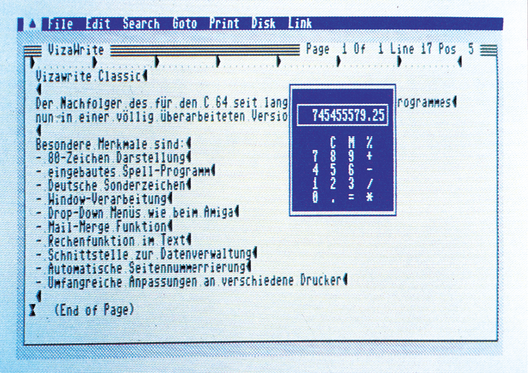

Vizawrite Classic 128 - Gutes noch besser?
Der C 128 als Mediencomputer mit einer Textverarbeitung, die alle Anforderungen einer modernen Benutzeroberfläche bietet — Vizawrite 128 der Nachfolger des Vizawrite 64, erfüllt diesen Traum.
Computer verändern sich, sie werden schneller, bekommen mehr Speicher und ermöglichen eine komfortablere Bedienung. Äm wichtigsten ist die Tatsache, daß Computer immer leichter vom Menschen bedient werden können. Obwohl natürlich die Hardware daran einen wesentlichen Anteil hat, so ist der eigentliche Fortschritt in der Weiterentwicklung der Software zu sehen.
Viele, meist sehr teure, Computer besitzen mittlerweile eine »Benutzeroberfläche«, die mit Grafik und Menütechnik leicht zu handhaben ist. Warum das hier beschrieben wird? Nun, Vizawrite Classic für den C 128 besitzt eine eigene Benutzeroberfläche, die einem viele tausend Mark teuren Profi-Computer nicht unähnlich ist. Der Nachfolger dieses für den C 64 seit langem bekannten Programms ist eine völlige Neuprogrammierung, ein eigenständiges Programm, das die Fähigkeiten des C 128 erst so richtig weckt. Kenner des C 128 wissen, daß sich der C 128 nach dem Einschalten zwar wie der C 64 im Basic-Programmiermodus befindet, darüber hinaus aber in der Lage ist, mit besonderen Bedienungshilfen zu arbeiten. Drop-Down-Menüs, Fenster, interruptgesteuerte Parallelverarbeitung und Funktionssymbole (Icons) sind dem C 128 keineswegs unbekannte Features. Genau das aber ist es, was Vizawrite Classic (Bild 1) von seinem Vorgänger und den Konkurrenzprodukten hauptsächlich unterscheidet. Zwar ließ das Programm lange auf sich warten, denn den C 128 gibt es offiziell nun schon über ein Jahr — aber es hat sich gelohnt, denn die Bedienungsfreundlichkeit von Vizawrite Classic ist so gut, daß sich ein Handbuch beinahe erübrigt. Trotzdem liegt dem 348 Mark kostenden Programm natürlich ein (vorläufig noch englisches) Handbuch bei.

Wer Vizastar für den C 64 kennt, weiß, wie komfortabel die Mischung aus einem Modul und einer Diskette, die beide zur »Grundausrüstung« gehören, ist. Daß dabei gleichzeitig ein wirksamer Kopierschutz möglich wird, der ausnahmsweise mal nicht die Arbeit mit Vizawrite Classic behindert, ist ein positiver Nebeneffekt. Bei der zum Test vorliegenden Version, die auch schon an den Kunden ausgeliefert wird, handelt es sich um eine englische Version (Bild 1) mit englischem Handbuch, aber deutschem Zeichensatz. Handbuch und Diskette sollen aber nach Auskunft des Vertreibers in Kürze gegen deutsche Versionen ausgetauscht werden können. Eine Vorabversion von Vizawrite Classic deutsch konnten wir übrigens schon begutachten (Bild 2).
Geladen wird Vizawrite Classic ganz einfach durch Einstecken eines Moduls und Einlegen einer Diskette. Beim Einschalten des Computers wird das Programm dann automatisch geladen. Nach kurzer Zeit präsentiert sich am Monitor ein Titelbild, das die Erwartungen höher steigen läßt.
Ist das Programm fertig geladen, erscheint eine übersichtliche Maske, die außer den Überschriften zu den wichtigen Funktionen der Software auch den Dateinamen, die aktuelle Seite und Spalte enthüllt. Wie schon beim Vizawrite 64, wurde erfreulicherweise darauf verzichtet, den Anwender durch eine Vielzahl von Menüs zu schicken, bis er dann endlich zum Schreiben kommen darf.
Wesentlichster Unterschied zum bisherigen Programm sind die sofort paraten 80 Zeichen pro Zeile (das Scrolling entfällt bis zu diesem Bereich) und die ganz neue Drop-Down-Menüzeile, deren Funktionen von besonderer Qualität ist. Die gesamte Bedienerführung erfolgt über Windows, ein angenehmes Arbeiten wird garantiert. In der Formatzeile kann wie bei Vizawrite 64 das gewünschte Format eingestellt werden. Die Formatzeile erlaubt in bekannter Weise die Definition von Steuerzeichen für den Drucker, deren Aktivierung im Text erfolgt.
Was für den Besitzer eines Sportwagens das Durchtreten des Gaspedals bedeutet, widerfährt dem Vizawrite Classic-Benutzer, wenn er auf die ESC- oder CBM-Taste drückt. In diesem Augenblick schaltet Vizawrite Classic quasi die »Nachbrenner« ein und eine Vielzahl von Standard- und Sonderfunktionen werden erreichbar. Hier zeigt sich, daß es nicht unbedingt notwendig ist, einen modernen Computer mit einer Maus zu steuern. So niedlich diese kleinen »Tierchen« auch sein mögen, beim C 128 erledigen die Cursortasten den gleichen Zweck, ohne daß man das Gefühl hat,Wesentliches verpaßt zu haben. In dieser Menüzeile findet man die Startpunkte für insgesamt acht Drop-Down-Menüs (Bild 2).
Angefangen bei den Standardfunktionen wie Farbeinstellungen, Such-, Kopier-, Verschiebe- und Druckfunktionen, werden hier auch ein paar besondere »Funktionsleckerbissen« aufgerufen, doch dazu später mehr. Die Durchführung der vorhandenen Blockoperationen spielt sich ebenfalls in dieser Auswahl ab. Das Einfügen von Phrasen in den Text stellt genauso wenig ein Problem dar. Dazu muß allerdings eine Datei mit den gewünschten Ausdrücken existieren. Allen Redewendungen geht ein Schlüssel voran, über den sie eingefügt werden können.
Wichtige Funktionen, wie zum Beispiel das Einfügen von Textpassagen, können über die Funktionstasten erreicht werden, ebenso wie das Scrollen des Bildschirms.
Selbstverständlich ist auch die Formatsteuerung mit Steuerzeichen verwirklicht. Alle Sequenzen werden hier über die Control-Taste eingefügt. Mit Unterstreichen, Fettdruck und Zentrieren seien nur einige von vielen Möglichkeiten genannt. Die Formatierung findet direkt am Bildschirm statt. Man muß also nicht warten, bis der Ausdruck vorliegt. Uber die Steuerzeichen ist auch das Einfügen von Texten (Merge) realisiert. Durch diese Einrichtung kann man beliebig Texte verknüpfen, einfügen oder Adressen in Serienbriefe aufnehmen.
Der ohnehin schon großen Speicherkapazität des C 128 sind durch diese Funktion nur noch die Kapazität der Diskette als Grenze gesetzt.
Die Funktionstasten selbst sind mit verschiedenen Editierfunktionen belegt.
Auch die »Alt«-Taste erfährt bei Vizawrite Classic eine sinnvolle Anwendung. Vor allem für die Arbeit mit separaten Spalten (ohne Verwendung von Tabulatoren) ist diese Möglichkeit sehr nützlich. Sie haben richtig gelesen, Vizawrite Classic ist in der Lage, nicht nur vertikal Absätze einzurichten, sondern beherrscht es auch bestens, in zwei (oder mehr) Spalten nebeneinander Texte zu erfassen. Durch Definieren von Spalten kann der Bildschirm zum Beispiel für Layoutdrucke oder Tabellen aufgeteilt werden.
Lehrer eingebaut
Eine der herrausragendsten Eigenschaften von Vizawrite Classic ist zweifellos das implementierte Wörterbuch. Schon bei der ersten Begegnung mit diesem »Dictionary« stellt man fest, daß es sich um einen »intelligenten«, das heißt selbstlernenden Bestandteil handelt. Am Anfang ist das Ganze eine recht mühsame Angelegenheit. Denn nach einem ersten Check stellt das Programm fest, daß noch keine Wörter abgespeichert sind (in der angekündigten endgültigen Version werden dann allerdings mehr als 38 000 deutsche Wörter enthalten sein). Der Anwender muß also erst, natürlich programmgesteuert, neu hinzugekommene Wörter speichern. Nach einiger Zeit ist man in der Lage, Rechtschreibfehler mit Hilfe dieser Auswahl zu finden und auch zu korrigieren. Hat man erst den gesamten deutschen Wortschatz gespeichert, so kann höchstens noch die Grammatik Schwierigkeiten machen. Betrachten wir diese Funktion etwas genauer. Nach Eingabe des Textes wählt man das integrierte Rechtschreibeprogramm an. Von hier aus erfolgt dann die Steuerung der Wörterbuch-Möglichkeiten. Sie können eine Liste der verwendeten Wörter anfordern, die nach verschiedenen Ordnungskriterien angezeigt wird. Um festzustellen, ob Wörter im Text dem Wörterbuch unbekannt sind wird eine Überprüfungsfunktion gestartet. Alle nicht vorhandenen Wörter invertiert das Programm. Nach einem Rücksprung in den Vizawrite-Modus muß die Auswahl »Verify« aufgerufen werden. Jetzt können die unbekannten Wörter entweder zur Speicherung markiert oder zur späteren Verbesserung übersprungen werden, natürlich voll Window-gesteuert. Nach Erledigung dieser Arbeit begibt man sich wieder in den Vizaspell-Modus. Nach Aufruf der entsprechenden Auswahl beginnt der Computer mit dem Hinzufügen der neuen »Vokabeln« in die Wörterbuch-Dateien. Danach wird die Bearbeitung des Textes ganz normal fortgesetzt. Nach längerem Einsatz steht so ein umfangreicher und vor allem persönlicher »Rechtschreibduden« zur Verfügung. Schade ist nur, daß ein Löschen von irrtümlich falsch gespeicherten Wörtern nicht ohne weiteres möglich ist.
An dieser Stelle ist ein kleiner Nachteil von Vizawrite Classic erwähnenswert. Mit Hilfe von »Control-f« kann man die Formatzeile an jede beliebige Stelle des Textes kopieren. Vor allem nach dem Einfügen eines »New-Page«-Kommandos kommt es vor, daß sich bei der weiteren Eingabe die Formatzeile nach unten verschiebt. Das bedeutet im Klartext, die Formatierung erfolgt nicht für die nachfolgenden Textpassagen, sondern wird im alten Format fortgesetzt.
Komfortable »Menübar«
Längst fällig ist jetzt die versprochene Beschreibung der Menüfunktionen von Vizawrite Classic. Wie bereits erwähnt, erfolgt die Bedienerführung über Bildschirmfenster. In der Menüzeile präsentiert sich der ganze Aktionsradius des Programms. Der Textverarbeitungs-Freak findet hier alles was sein Herz begehrt. Durch Drücken der Commodore-Taste erfolgt die Ansteuerung der Menüzeile. Jetzt kann der Benutzer entweder, wenn er bereits mit den Funktionen vertraut ist, sofort über das Tippen der Anfangsbuchstaben die gewünschte Wirkung erreichen oder durch das Positionieren mit dem Cursor auf dem Drop-Down-Menü. Alle Ausgaben erfolgen nun über Fenster, die direkt in den Text geschrieben werden. Sehr komfortabel gestaltet sich das Einlesen einer Textdatei. Jede Vizawrite-Datei kann direkt aus dem angezeigten Inhaltsverzeichnis geladen werden. Erfreulicherweise lassen sich auch alle alten Vizawrite 64-Dateien problemlos einlesen und weiterverarbeiten. Zum Speichern stehen mehrere Befehle zur Verfügung. Die wichtigen Blockoperationen aktiviert man genauso über die Menüzeile, wie beispielsweise die Auswahl zum Suchen und Löschen von Textpassagen.
Durch die Anweisung »Goto« kann der Anwender in eine Work-Seite, die für Notizen reserviert ist und natürlich in den Text eingefügt werden kann, springen oder in einen für Kopf- und Fußzeilen reservierten Bereich. Der Aufruf einer beliebigen Seite spielt sich ebenfalls unter diesem Menüpunkt ab. Die Auswahl »Print« sorgt für die richtige Auswahl des Druckers, die Seitengestaltung, Einstellung der Schrift, die Serienbrieffunktion und letztlich für den Ausdruck des Dokuments. Selten konnten wir eine so reichhaltige Palette der Auswahl- und Anpassungsmöglichkeiten bewundern — hier wurde Pionierarbeit geleistet, die vorbildlich ist.
Der Punkt »Disk« sichert eine richtige Ansteuerung der Diskette und läßt keine wichtige Floppyfunktion vermissen. Wem das Angebot noch nicht ausreicht, der kann sogar Sonderbefehle codiert an die Diskettenstation senden. Außergewöhnlich: Eine Sicherheitskopie mit nur einer Floppy ist integriert. Mit »Link« kann man schließlich den Sprung in Vizaspell wagen. Ein eingebauter Taschenrechner ermöglicht den Einbau von Berechnungen in den Text. Im Direktmodus erweist sich der Taschenrechner als vollwertiger Tischcomputer.
Druckeranpassung
Für die Druckeranpassung stehen generell zwei Möglichkeiten zur Verfügung. Über die Menüzeile erfolgt in der Auswahl »Print« die Definition des verwendeten Druckers. Problemlos kann festgelegt werden, welcher Drucker am System angeschlossen ist. Das Angebot besteht aus den gebräuchlichsten Matrix- und Typenraddruckern. Dabei kann zusätzlich eingestellt werden, ob der Drucker CBM-seriell, parallel (Centronics) oder über eine RS 232 angeschlossen ist. Außerdem lassen sich die Geräteadresse und die RS232-Übertragungsparameter einstellen. Wer Besonderheiten seines Druckers nutzen will, der muß sich eine spezielle Anpassungsdatei erstellen, in der alle Sequenzen zur Ansteuerung eingetragen werden. Wird diese Datei zu Beginn geladen und die programminternen Parameter entsprechend eingestellt, arbeitet Vizawrite Classic mit den selbstdefinierten Angaben.
Da die integrierte Druckeransteuerung bereits einen sehr hohen Komfort bietet und sich vor allem durch ihre problemlose Handhabung sehr benutzerfreundlich zeigt, ist das Erstellen einer gesonderten Parameterdatei meist überflüssig. Falls »Druckerexoten« eingesetzt werden, kommt man um eine gesonderte Anpassung allerdings nicht herum. Ähnliches gilt für die Floppy-Einstellung, denn endlich ist es auch möglich geworden, problemlos zwei Laufwerke anzusprechen, beziehungsweise Dateien nicht auf den Drucker, sondern auf die Diskette formatiert auszugeben. Wenn man dabei anstelle des CBM-Zeichensatzes den ASCII-Zeichensatz verwendet, ist sogar die Erstellung von Assembler-Quelldateien mit der komfortablen Bedienung von Vizawrite 128 möglich.
Bei allen Vorteilen fehlt Vizawrite Classic dennoch eine immer wichtiger werdende Funktion. Im Gegensatz zu Protext 128 besitzt Vizawrite 128 keinen Terminal-Modus. Das heißt alle Dateien müssen erst mit einem Terminalprogramm geladen und übertragen werden. Dabei kommt es einem zwar zur Hilfe, daßVizawrite 128seine Dateien nunmehr als sequentielle Datei und nicht mehr als Programm-Datei speichert, ein vollwertiger Ersatz ist dies aber nicht.
Gute Aussichten
Mit Vizawrite Classic ist nicht nur dem Programm selbst, sondern auch dem C 128 eine erfolgreiche Zukunft bestimmt. Zwar sind beide nicht gerade billig, aber zusammen ergeben Computer und Textprogramm (348 Mark) eine sinnvolle Einheit, mit der das Arbeiten Spaß macht. Welche Leistungsfähigkeit im C 128 stecken kann, hat ja bereits Protext 128 gezeigt, das auch weiterhin den Vergleich mit Vizawrite 128 nicht zu scheuen braucht. In einem Punkt übertrifft Vizawrite Classic allerdings alle anderen bislang bekannten Programme für den C 128 — seine eigene Benutzeroberfläche rückt ihn deutlich in die obersten Kategorien der 8-Bit-Systeme. Und da zu jedem Textprogramm eigentlich auch ein Datei- und Tabellenkalkulationsprogramm gehört, wurde Vizastar 128 auch gleich angekündigt — wir werden Sie informieren.
(Roland Fieger/aw)Info: DTM Hoffman & Partner, Bornhaldenweg 5, 6200 Wiesbaden, Tel. 0 6121/40 79 89 Schweiz: Microtron, Brunnenweg 5, CH 2542 Pieterlen